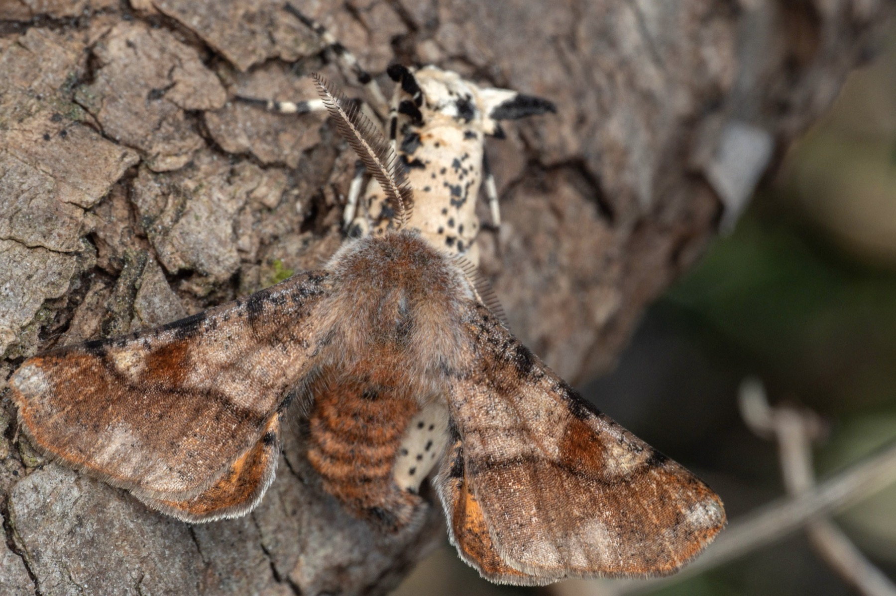
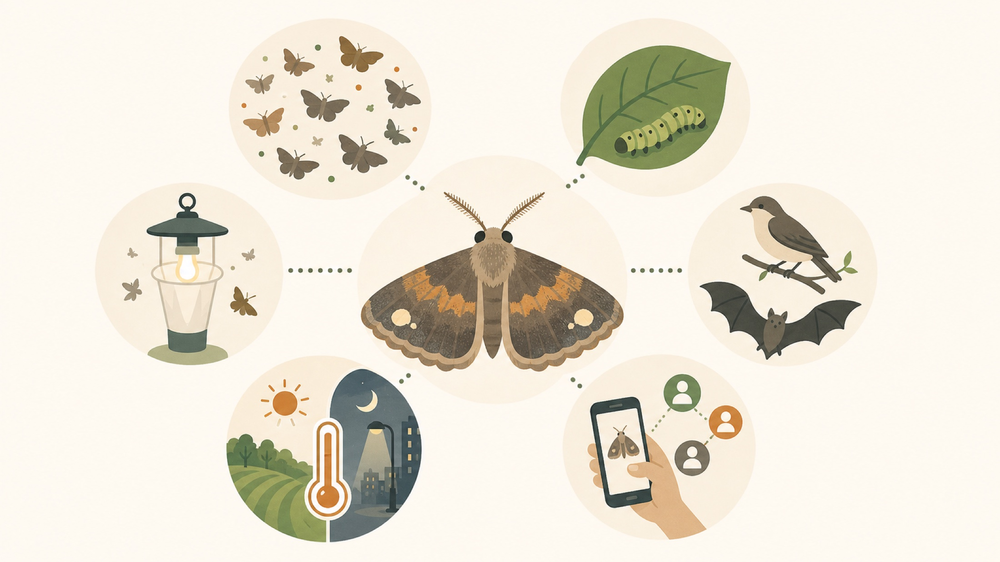

Background
海外事例から日本版の標準手法を設計する
英国やオランダなどでは、蛾類を対象にしたライトトラップ調査が長期モニタリングとして発展してきました。蛾はチョウより種数が多く、群集変化を細かく拾えるため、気候、土地利用、植生、光環境の変化を読む材料になります。日本で同じように使うには、まず光源、入口構造、設置条件、記録項目をそろえた標準ライトトラップ手法と、それを長く動かすコミュニティが必要です。
なぜ蛾類か
蛾類は、種数、植生との結びつき、夜の食物網、光への反応、市民参加のしやすさが重なった、広域モニタリング向きの分類群です。

種数が多い群集変化を細かく拾える
植生を反映食草を通じて環境とつながる
夜の食物網鳥・コウモリなどの餌資源
標準化しやすい光源と手順をそろえられる
変化に敏感気候・土地利用・光害を反映
参加しやすい庭・地域・写真記録から入れる
海外事例から得る設計原則
| 事例 | 特徴 | 日本版への示唆 |
|---|---|---|
| Rothamsted Insect Survey | 1964年から続く英国の定点ライトトラップ網。 | 同一地点・同一手法を長く続ける定量骨格が必要。 |
| National Moth Recording Scheme | 市民・愛好家の記録を地域記録担当者が検証し、全国データにする。 | 市民投稿だけで終わらせず、検証者と公開DBへつなぐ。 |
| Garden Moth Scheme | 庭での半標準化調査。ゼロ記録も含めて継続する。 | 初心者が参加できる普通種リストと、努力量の記録が重要。 |
| EU PoMS / SPRING | 標準化LEDトラップ、撮影、AI同定を組み合わせた欧州横断の試行。 | 非専門家でも使える標準機材と画像記録が鍵になる。 |
| DIOPSIS / AMI | 自律カメラと機械学習による非致死的モニタリング。 | 将来的には撮影ベース、自動計数、AI一次同定へ拡張する。 |
定性記録と定量調査の位置づけ
定性的広域・低コスト・参加しやすい → 努力量をそろえ、トレンドを見る定量的
- 市民投稿写真・分布記録
- イベント調査Moth Night型
- 半標準化庭・普通種リスト・ゼロ記録
- 標準トラップ網同一機材・同一頻度
- 長期定点年変動・減少率
日本版の二層構造
広域の市民記録
市民、同好会、博物館、既存プラットフォームの記録を集め、分布、新産地、季節変化を広く拾います。これは参加の入口であり、分布変化を見る層です。
少数の定点定量
同意済み地点で標準トラップを同じ手順で動かし、個体数・種組成・年変動を比較します。トレンド検出に使う層です。
データの流れ
- 観察・採集トラップ / 撮影
- 画像・標本日時・地点付き
- 同定AI一次候補・専門家／地域検証
- 検証済DB公開可否を管理
- 公開地図・CSV
- 活用保全・教育
希少種・私有地情報は、公開前に一般化・非公開化します。
| 段階 | 内容 | 注意点 |
|---|---|---|
| 観察・採集 | 標準トラップ、ライトシート、写真、標本で記録。 | 点灯時間、機材、地点、天候、ゼロ記録を残す。 |
| 一次同定 | AI候補、図鑑、参加者の同定を使う。 | 同定確度と根拠を残す。 |
| 検証 | 地域記録担当者、博物館、専門家が確認。 | 写真で十分な種と標本確認が必要な種を分ける。 |
| 公開 | 確認済みデータを地図、集計、CSVで公開。 | 希少種や私有地は位置情報を一般化する。 |
| 活用 | 保全、農地・都市緑地評価、気候変動、環境教育へ使う。 | 定量データと機会的記録を混同しない。 |
最初の5年
- 1年目: コアチーム形成、既存データ整理、標準トラップ試作、パイロット地点3〜5を選定。
- 2年目: 標準トラップ比較と小規模定点運用を開始。記録フォーム、同定検証、公開ルールを試す。
- 3年目: 地点を20〜30へ拡大し、市民研修と地域記録担当者の体制を作る。
- 4年目: 地点50〜100を目標に、行政・博物館・既存プラットフォームとの連携を進める。
- 5年目: 年次レポートを定例化し、保全評価、都市緑地、農地、気候変動指標への活用を始める。